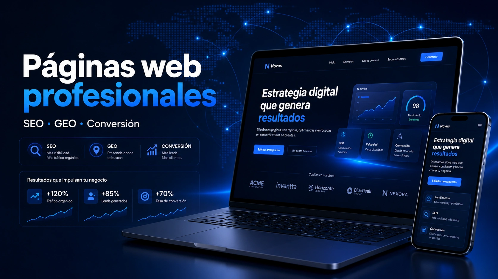

Diseño orientado a conversión
No diseñamos solo para que la web sea bonita: organizamos el contenido para explicar, generar confianza y facilitar que el cliente contacte.
Creamos páginas web para empresas y pymes de Mataró, el Maresme y Barcelona. Diseñamos webs corporativas y landings responsive con una imagen profesional, mensajes claros y una estructura preparada para SEO y GEO. El objetivo es sencillo: que tu negocio se entienda bien y que contactar contigo resulte fácil.

No diseñamos solo para que la web sea bonita: organizamos el contenido para explicar, generar confianza y facilitar que el cliente contacte.
Creamos páginas ligeras, claras y adaptadas a móvil, tablet y escritorio para que la experiencia sea fluida desde cualquier dispositivo.
Trabajamos títulos, metadescripciones, enlazado interno, estructura semántica y contenido para mejorar la visibilidad orgánica.
Ordenamos la información para que también sea comprensible para asistentes de IA y motores generativos que responden preguntas de usuarios.
Muchas webs hablan de la empresa, pero no explican con claridad qué problema resuelven, para quién trabajan y qué debe hacer el visitante después.
Una web sin llamadas a la acción, formularios visibles o rutas claras puede recibir visitas sin generar consultas, reservas o leads.
Si la web no tiene páginas de servicio bien enfocadas, títulos claros y contenido ordenado, es más difícil competir en Google y en respuestas generadas por IA.
Una web completa para presentar tu empresa, servicios, propuesta de valor, confianza, contacto y contenidos clave.
Ideal para presencia profesionalUna página enfocada en una oferta concreta, con mensaje directo, beneficios, objeciones, preguntas frecuentes y llamada a la acción.
Pensada para captar leadsPáginas específicas para cada servicio, evitando mezclar mensajes y ayudando a posicionar búsquedas más concretas.
Más claridad para cada servicioEstructura preparada para mostrar contenidos en varios idiomas, manteniendo coherencia visual, técnica y de navegación.
Español, catalán e inglésSecciones de contenido útil para responder dudas, captar tráfico orgánico y reforzar autoridad alrededor de tus servicios.
Contenido útil para SEO y GEOFormularios de contacto, reservas o solicitudes preparados para recibir consultas y activar procesos posteriores si lo necesitas.
Lista para captar oportunidadesUna empresa de Mataró necesita una web que explique bien qué ofrece y a quién ayuda. También debe dejar clara su zona de trabajo y facilitar el contacto desde cualquier dispositivo. Diseñamos cada proyecto a partir del negocio real, de sus clientes y de sus objetivos comerciales.
| Necesidad | Cómo lo trabajamos |
|---|---|
| Entorno empresarial | Mataró cuenta con 7 polígonos de actividad económica, unas 900 empresas y más de 11.000 puestos de trabajo en ellos. En un tejido empresarial tan diverso, la web debe presentar con precisión los servicios y las vías de contacto. |
| Presencia local | Mostramos con claridad dónde trabajas y qué puedes ofrecer a tus clientes. Mataró, el Maresme y Barcelona se integran de forma natural cuando forman parte de la actividad real de la empresa. |
| Captación | Cada página guía al visitante hacia una acción concreta. Organizamos servicios, mensajes y llamadas a la acción para facilitar consultas, reservas o solicitudes de información. |
| Experiencia móvil | La web debe funcionar bien en móvil, tablet y ordenador. Priorizamos una navegación clara, tiempos de carga razonables y accesos sencillos a contacto o formulario. |
No partimos de una solución genérica. Adaptamos la estructura, los contenidos y las llamadas a la acción a tu actividad, a tus servicios y al tipo de cliente que quieres atraer.
Trabajamos con empresas de Mataró y podemos atender proyectos de Argentona, Cabrera de Mar, Vilassar de Mar, Premià de Mar, El Masnou y otros municipios del Maresme. También trabajamos con empresas de Barcelona y en proyectos que pueden desarrollarse online.
Los datos empresariales anteriores proceden del Ajuntament de Mataró, en información publicada en . Como referencia adicional sobre la actividad empresarial local, el balance del Servei d'Ocupació de Mataró (SOM) recoge la relación del servicio con empresas durante .
Organizamos títulos, secciones y contenidos para que tu web sea fácil de entender. Esto ayuda a los usuarios, a Google y también a los asistentes de IA.
Dedicamos cada página a una necesidad concreta para que el cliente encuentre antes lo que busca. Así, una página web, un servicio de automatización de procesos o una solución de inteligencia artificial aplicada mantienen un mensaje claro y diferenciado.
Creamos bloques que responden preguntas reales del cliente y ayudan a que la información pueda ser citada o resumida correctamente.
Trabajamos la estructura, el contenido, el rendimiento y el enlazado para facilitar que Google y los asistentes de IA entiendan tu web. El posicionamiento también depende de la competencia, la autoridad y la evolución del sitio. Por eso planteamos la visibilidad como un trabajo continuo y medible.
Revisamos qué vendes, a quién te diriges, qué servicios quieres destacar y qué objetivo debe cumplir la web.
Organizamos secciones, contenidos y llamadas a la acción antes de diseñar. También definimos el recorrido que queremos facilitar al visitante.
Creamos una web responsive, clara y coherente con tu marca. Cuidamos el diseño, la velocidad y el funcionamiento técnico.
Comprobamos textos, enlaces, rendimiento y navegación móvil antes de publicar. También revisamos los elementos necesarios para buscadores.
En este vídeo resumimos el enfoque de Nexautia para crear páginas web profesionales: diseño claro, adaptación a escritorio, tablet y móvil, estructura orientada a buscadores y contenido preparado para que también pueda ser comprendido por asistentes de IA.
Webs corporativas, landings, páginas de servicios, sitios multidioma y webs conectadas a formularios o reservas.
Diseño responsive, estructura semántica, metadatos, enlazado interno, rendimiento y contenido trabajado para SEO, AEO y GEO.
Con empresas y pymes de Mataró, el Maresme y Barcelona, además de proyectos que pueden desarrollarse de forma online.
Una página web profesional debe explicar bien el negocio, funcionar en todos los dispositivos y cargar con rapidez. También necesita llamadas a la acción claras, una base SEO correcta y una estructura preparada para crecer.
No exactamente. Una landing se centra en una oferta concreta y busca una acción específica. Una web corporativa presenta la empresa, sus servicios, confianza, contacto y estructura general.
Sí. Trabajamos estructura de títulos, metadatos, textos, enlazado interno, rendimiento, etiquetas semánticas y datos estructurados cuando encaja con el proyecto.
GEO consiste en organizar el contenido para que los motores generativos y los asistentes de IA puedan entenderlo mejor. Para ello usamos estructura clara, respuestas directas y contexto suficiente.
Sí. Se puede preparar una web multidioma con textos, navegación y llamadas a la acción adaptadas a cada idioma, manteniendo coherencia visual y técnica.
Sí. Sí. La web puede incluir formularios, reserva de citas y captación de contactos. También puede conectarse después con automatizaciones, CRM, correo o herramientas internas.
Sí. Nexautia desarrolla páginas web para empresas y pymes de Mataró, el Maresme y Barcelona, y también puede trabajar en proyectos online.
Podemos revisar tu situación actual y proponerte una web clara y profesional. La plantearemos para facilitar la captación, mejorar la visibilidad orgánica y explicar bien tus servicios tanto a tus clientes como a buscadores y asistentes de IA.